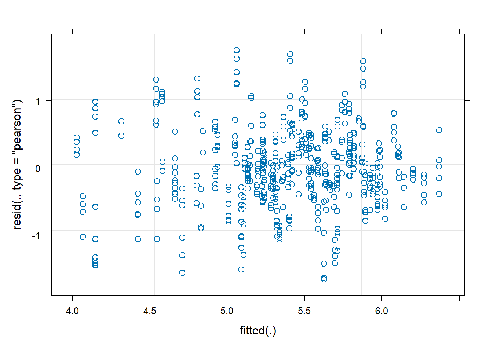
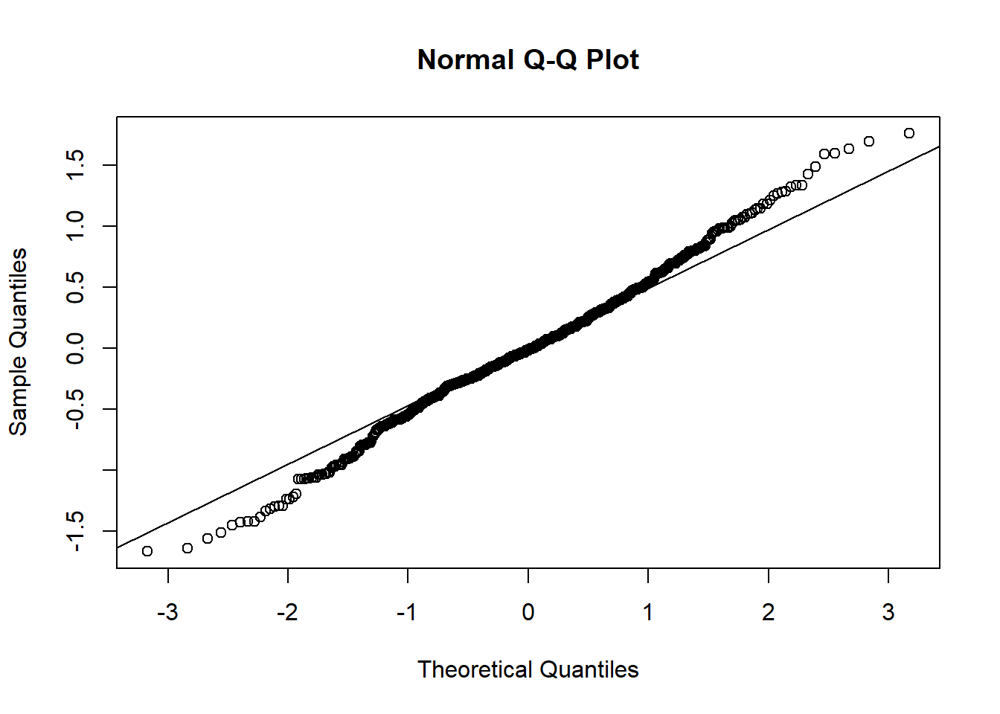

library(tidyverse)
library(pracma)
library(lme4)
library(lmerTest)
library(car)
library(readxl)
# Importar os dados
dados <- read_excel("Trabalho final Emerson.xlsx", sheet = "Planilha1")
# Calcular AACPD por unidade experimental
aacpd_result <- dados %>%
group_by(Tratamento, Planta, Trifolio, Foliolo, Avaliador) %>%
summarise(
AACPD = trapz(Dia, Severidade),
.groups = "drop"
) %>%
mutate(
AACPD_log = log1p(AACPD) # transformação log(1 + x)
)
# Modelo com AACPD transformado
modelo_log <- lmer(
AACPD_log ~ Tratamento + (1 | Planta/Trifolio/Foliolo/Avaliador),
data = aacpd_result
)
# Verificar resultados
summary(modelo_log)Linear mixed model fit by REML. t-tests use Satterthwaite's method [
lmerModLmerTest]
Formula: AACPD_log ~ Tratamento + (1 | Planta/Trifolio/Foliolo/Avaliador)
Data: aacpd_result
REML criterion at convergence: 1209.4
Scaled residuals:
Min 1Q Median 3Q Max
-2.85843 -0.53384 -0.02411 0.57727 3.02121
Random effects:
Groups Name Variance Std.Dev.
Avaliador:Foliolo:Trifolio:Planta (Intercept) 0.00000 0.0000
Foliolo:Trifolio:Planta (Intercept) 0.00000 0.0000
Trifolio:Planta (Intercept) 0.08177 0.2859
Planta (Intercept) 0.00000 0.0000
Residual 0.33859 0.5819
Number of obs: 660, groups:
Avaliador:Foliolo:Trifolio:Planta, 60; Foliolo:Trifolio:Planta, 30; Trifolio:Planta, 10; Planta, 5
Fixed effects:
Estimate Std. Error df t value Pr(>|t|)
(Intercept) 5.64861 0.11756 22.65246 48.050 < 2e-16 ***
TratamentoIsolado 1 -0.18433 0.10624 640.00000 -1.735 0.08320 .
TratamentoIsolado 2 -0.28869 0.10624 640.00000 -2.717 0.00676 **
TratamentoIsolado 3 -0.05699 0.10624 640.00000 -0.536 0.59184
TratamentoIsolado 4 -0.75740 0.10624 640.00000 -7.129 2.73e-12 ***
TratamentoIsolado 5 -0.19179 0.10624 640.00000 -1.805 0.07149 .
TratamentoIsolado 6 0.29221 0.10624 640.00000 2.751 0.00612 **
TratamentoIsolado 7 0.12293 0.10624 640.00000 1.157 0.24766
TratamentoProduto 1 -1.27128 0.10624 640.00000 -11.966 < 2e-16 ***
TratamentoProduto 2 -0.10707 0.10624 640.00000 -1.008 0.31393
TratamentoProduto 3 -0.49614 0.10624 640.00000 -4.670 3.67e-06 ***
---
Signif. codes: 0 '***' 0.001 '**' 0.01 '*' 0.05 '.' 0.1 ' ' 1
Correlation of Fixed Effects:
(Intr) TrtmI1 TrtmI2 TrtmI3 TrtmI4 TrtmI5 TrtmI6 TrtmI7 TrtmP1
TrtmntIsld1 -0.452
TrtmntIsld2 -0.452 0.500
TrtmntIsld3 -0.452 0.500 0.500
TrtmntIsld4 -0.452 0.500 0.500 0.500
TrtmntIsld5 -0.452 0.500 0.500 0.500 0.500
TrtmntIsld6 -0.452 0.500 0.500 0.500 0.500 0.500
TrtmntIsld7 -0.452 0.500 0.500 0.500 0.500 0.500 0.500
TrtmntPrdt1 -0.452 0.500 0.500 0.500 0.500 0.500 0.500 0.500
TrtmntPrdt2 -0.452 0.500 0.500 0.500 0.500 0.500 0.500 0.500 0.500
TrtmntPrdt3 -0.452 0.500 0.500 0.500 0.500 0.500 0.500 0.500 0.500
TrtmP2
TrtmntIsld1
TrtmntIsld2
TrtmntIsld3
TrtmntIsld4
TrtmntIsld5
TrtmntIsld6
TrtmntIsld7
TrtmntPrdt1
TrtmntPrdt2
TrtmntPrdt3 0.500
optimizer (nloptwrap) convergence code: 0 (OK)
boundary (singular) fit: see help('isSingular')anova(modelo_log)Type III Analysis of Variance Table with Satterthwaite's method
Sum Sq Mean Sq NumDF DenDF F value Pr(>F)
Tratamento 115.22 11.522 10 640 34.028 < 2.2e-16 ***
---
Signif. codes: 0 '***' 0.001 '**' 0.01 '*' 0.05 '.' 0.1 ' ' 1# Diagnóstico dos resíduos transformados
plot(modelo_log)
qqnorm(resid(modelo_log)); qqline(resid(modelo_log))
shapiro.test(resid(modelo_log))
Shapiro-Wilk normality test
data: resid(modelo_log)
W = 0.99468, p-value = 0.02145leveneTest(AACPD_log ~ Tratamento, data = aacpd_result)Levene's Test for Homogeneity of Variance (center = median)
Df F value Pr(>F)
group 10 8.0705 2.394e-12 ***
649
---
Signif. codes: 0 '***' 0.001 '**' 0.01 '*' 0.05 '.' 0.1 ' ' 1